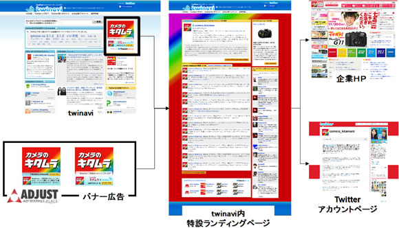

RSS広告社とCGMマーケティング、Twitter連携バナー広告「Tweetbanner」を共同開発
～Twitter公式企業アカウントの“つぶやき”をバナー広告上にも配信～
株式会社RSS広告社(本社：東京都渋谷区、代表取締役：田中 弦、以下 RSS広告社) と株式会社CGMマーケティング（本社：東京都渋谷区、代表取締役社長：林 郁、以下：CGMM）は、 2009年10月15日より、Twitterの持つ様々な情報伝播機能を利用できるバナー広告「Tweetbanner」を共同開発いたします。CGMMは、RSS広告社とバナー配信技術パートナーとして提携し、TwitterのAPI利用、運用ノウハウを提供します。RSS広告社は、バナー生成技術の提供と、様々なメディアや法人ホームページへの配信プラットフォームを提供します。（図１参照）
国内の「Twitter」サイトへの推定接触者（利用者）数は、前月比2.2倍の193万人（ビデオリサーチインタラクティブ調べ）と、トラフィックが急増しています。また、マーケティング活動の場としてのTwitterにも大きな注目が集まっており、企業の利用も急増しております。企業のマーケティングとしては、Twitter内に止まらず、情報をより広く様々な個所で発信したいというニーズが存在しています。「Tweetbanner」を利用することにより、Twitter内の情報をバナー広告や法人ウェブサイトに簡単に配信できるようになります。法人企業はバナー広告のリーチ力を有効活用し、Twitter外にも簡単にメッセージ（つぶやき）を配信できるようになります。
【商品の特徴】
- Twitterで発言した内容が1時間以内にTwitter外部にあるバナー広告へ反映されます。この機能により、これまでのバナー広告では実現が困難であった広告表現が可能になります。
- 「Tweetbanner」をきっかけとしたユーザーによる新規フォロー等のアクションにより、広告掲載期間終了後にも長期的にユーザーとコミュニケーションをとることができるようになります。
- また、ユーザーどうしのつながりを通してさらに情報が伝搬していくため、本サービスを利用するや企業サイトへのアクセス増が見込まれます。更には、フォロワー数の増加も期待できます。
本商品は、バナーデザインに加え、バナー広告用TwitterAPI利用、twinaviへの登録及び紹介※、広告配信システム利用が含まれており、広告主様へのワンストップパッケージとなっております。「Tweetbanner」の対応メディア第1弾として、株式会社クライテリア・コミュニケーションズ（本社：東京都港区、代表取締役CEO：長澤秀行）の運営するアドネットワーク「ADJUST」で今月末を目処に販売を開始いたします。また今後の展開として、バナー上でのユーザーのアクションをTwitterのつぶやきと連動させるなど、Twitterの機能を最大限に活かした商品を開発予定です。対応メディアの拡大に関しては、株式会社サイバー・コミュニケーションズ（本社：東京都港区、代表執行役社長：長澤秀行）と協力して積極的な推進活動を展開してまいります。
【図１：サービスイメージ】

【twinaviについて】
初心者のためのTwitterガイドサイト。1.Twitterがより楽しくなるガイドコンテンツ2.企業の公的アカウントであることを確認した「Twitter公式企業アカウント」の紹介3.外部のTwitter関連サービスの紹介などのコンテンツを用意し、Twitterの使い方・楽しみ方を総合的に紹介していきます。
【Twitterについて】
Twitterは、「What are you doing?」（いまなにしている？）というシンプルな問いかけに140 文字以内で答えることによって、さまざまなユーザー同士がつながるコミュニケーション・ツールです。投稿したメッセージは、自分を「フォロー」している ユーザーにリアルタイムで届きます。日常的ななにげないやりとりから、企業によるプロモーションへの活用に至るまで、Twitterの使い方はさまざまです。メッセージのやりとりには、Web サイトだけでなく、パソコンで動く各種の専用のクライアント・ソフトウエアや、携帯電話を使えるなど、コミュニケーション・ツールとして自由度が高いという特徴があります。
【株式会社CGMマーケティングについて】
株式会社デジタルガレージ（JASDAQ 4819、本社：東京都渋谷区、代表取締役/グループCEO：林 郁）、株式会社電通(東証一部 4324、本社：東京都港区、代表取締役社長：髙嶋 達佳）、株式会社サイバー・コミュニケーションズ（東証マザーズ 4788、本社：東京都港区、代表執行役社長：長澤 秀行）、株式会社アサツーディ・ケイ（東証一部 9747、本社：東京都中央区、代表取締役社長：長沼 孝一郎）の4社による共同出資会社。
【Twitterの企業活用に関するご相談】
株式会社CGMマーケティング Twitter担当宛
〒151-0063 東京都渋谷区富ヶ谷2-43-15山崎ビル
電話： 03-5465-7315 ファックス： 03-5465-7316 メール：adsales@cgmm.co.jp
【株式会社RSS広告社について】
株式会社RSS広告社 （本社：東京都渋谷区、代表取締役：田中 弦）
http://www.rssad.jp/
RSS広告社は平成17年4月、日本で初めてRSSフィードを利用した広告出稿／配信サービスを行うRSS広告専業企業として設立し、日本におけるRSS 広告市場を自ら創造し、成長させ、進化させる会社として、RSSフィードを使ったさまざまな広告商品を開発、提供しています。
【本リリースに関する技術／導入などのお問合せ先】株式会社RSS広告社】
担当 ： 山田
Tel ： 03-6416-1290
Email： ad-info@rssad.jp